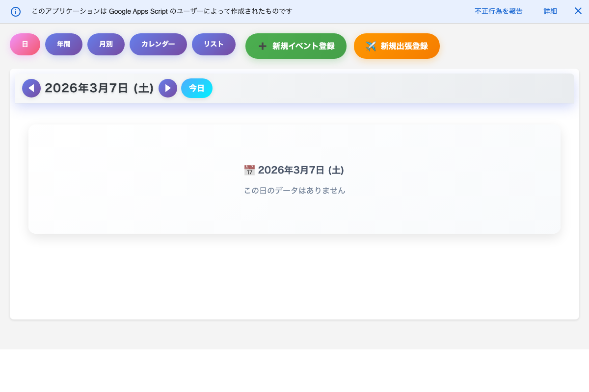

はじめに
この手順書は、「とうろくん」の使い方をまとめたものです。
学校行事の登録・出張の登録・日直の割り振りなど、日々の業務で使う機能について、
操作の手順をひとつずつ説明しています。
「とうろくん」には 2つの使い方 があります。お使いの方法に合わせて、下のタブを選んでください。
スプレッドシート版
Googleスプレッドシートを直接開いて使います。
データ登録・日直割り振り・CSV管理など
すべての機能が使えます。
データ登録・日直割り振り・CSV管理など
すべての機能が使えます。
Webアプリ版
専用のURLをブラウザで開いて使います。
予定の確認・行事の登録など
日常的な閲覧・入力に向いています。
予定の確認・行事の登録など
日常的な閲覧・入力に向いています。
スプレッドシート版
管理者・全機能
Webアプリ版
日常の閲覧・入力
スプレッドシート版の操作手順書
Googleスプレッドシートを開き、「とうろくんメニュー」から操作します。
1
初期設定・シートの見かた
スプレッドシートの開き方、シート構成、初めに行う設定について
2
学校行事の登録
サイドバーから学校行事を登録する手順と、各項目の説明
3
出張の登録
サイドバーから出張を登録する手順と、各項目の説明
4
日直の割り振り
職員の日直当番を自動で順番に割り振る機能の使い方
5
CSVデータの書き出し・読み込み
データをCSVファイルで書き出したり、読み込んだりする方法
6
その他の便利な機能
並べ替え、ID自動割り当て、ヘルプファイルの生成など
メニュー一覧
画面上部の「とうろくんメニュー」をクリックすると、以下の機能が使えます。
| メニュー項目 | できること | 手順書 |
|---|---|---|
| イベント登録サイドバー | 学校行事を登録する | 2. 学校行事の登録 |
| 出張登録サイドバー | 出張を登録する | 3. 出張の登録 |
| 日直割り振りサイドバー | 日直の割り振りをする | 4. 日直の割り振り |
| イベントCSV管理 | 行事データの書き出し・読み込み | 5. CSV管理 |
| 出張CSV管理 | 出張データの書き出し・読み込み | 5. CSV管理 |
| ヘルプファイル生成 | CSVの使い方ファイルを作成 | 6. その他 |
| イベントを日付順に並べ替え | 行事データを日付順に整理 | 6. その他 |
| 出張を日付順に並べ替え | 出張データを日付順に整理 | 6. その他 |
| 未設定IDの自動割り当て | IDが空の行にIDを入れる | 6. その他 |
| スプレッドシート初期化 | シートを作り直す | 1. 初期設定 |
Webアプリ版の操作手順書
専用のURLをブラウザで開いて使います。スマホやタブレットでも利用できます。

Webアプリ版の画面イメージ（機能により5つの表示モードを切り替え可能）
7
Webアプリの開き方と基本操作
URLの開き方、画面の見かた、スプレッドシート版との違い
8
5つの表示モード
日・年間・月別・カレンダー・リストの各ビューの見かたと使い分け
9
行事・出張の登録と編集
Webアプリから行事や出張を登録・編集・削除する方法
Webアプリでできること
| 機能 | 説明 | 手順書 |
|---|---|---|
| 予定の確認 | 5つの表示モードで行事・出張・日直をまとめて確認 | 8. 表示モード |
| 学校行事の登録 | 「新規イベント登録」ボタンから行事を追加 | 9. 登録と編集 |
| 出張の登録 | 「新規出張登録」ボタンから出張を追加 | 9. 登録と編集 |
| 行事の編集・削除 | 予定をクリック→「編集」「削除」で変更や削除 | 9. 登録と編集 |
| 出張の編集・削除 | 出張をクリック→「編集」「削除」で変更や削除 | 9. 登録と編集 |
| ドラッグで日付変更 | カレンダー上で行事を移動 | 8. 表示モード |
| 資料リンク | Googleドライブの資料を行事にリンク | 9. 登録と編集 |
ポイント:
日直の割り振りやCSV管理など、一部の管理機能はWebアプリ版では使えません。
それらの操作が必要な場合は、スプレッドシート版をお使いください。
それらの操作が必要な場合は、スプレッドシート版をお使いください。